本サイトで提供している情報は、歯科医師・歯科衛生士などの歯科医療関係者の方を対象としています。一般の方を対象とした情報提供を目的としたものではありませんので、ご了承ください。
歯周ポケットの値を、口に出すだけで検査表に入っていく。入力された値は読み上げと画面表示で確認できるので、手を止めず、目を離さず、検査に集中できます。歯科衛生士のためのクラウドサービスです。
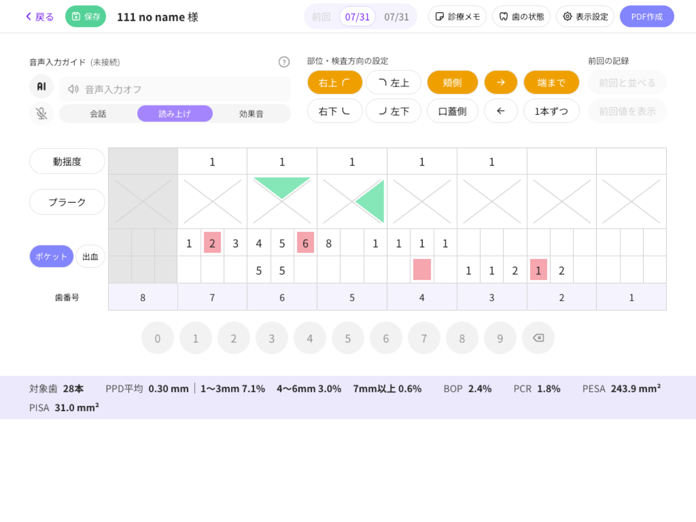
実際のチェアサイドでの検査手順に合わせて設計しました。声でも、画面のテンキーでも、同じ検査表に記録されます。
右上・左上・右下・左下と、頬側・舌側を切り替えます。進む方向（左右）も指定できます。
›プローブを持ったまま、測った値を口に出します。テンキーからの手入力も同じ検査表に入ります。
›入力された部位と値が読み上げられ、画面のガイドにも表示されます。目視しなくても誤入力に気づけます。
›入力後、カーソルは自動で次の測定点へ進みます。列の端まで続ける「端まで」と1歯ごとに止まる「1本ずつ」、進む向き（→／←）を選べます。
会話をするのではなく、読み上げと画面表示で確認する方式です。診療中の環境音の中でも、入った値がその場で分かります。
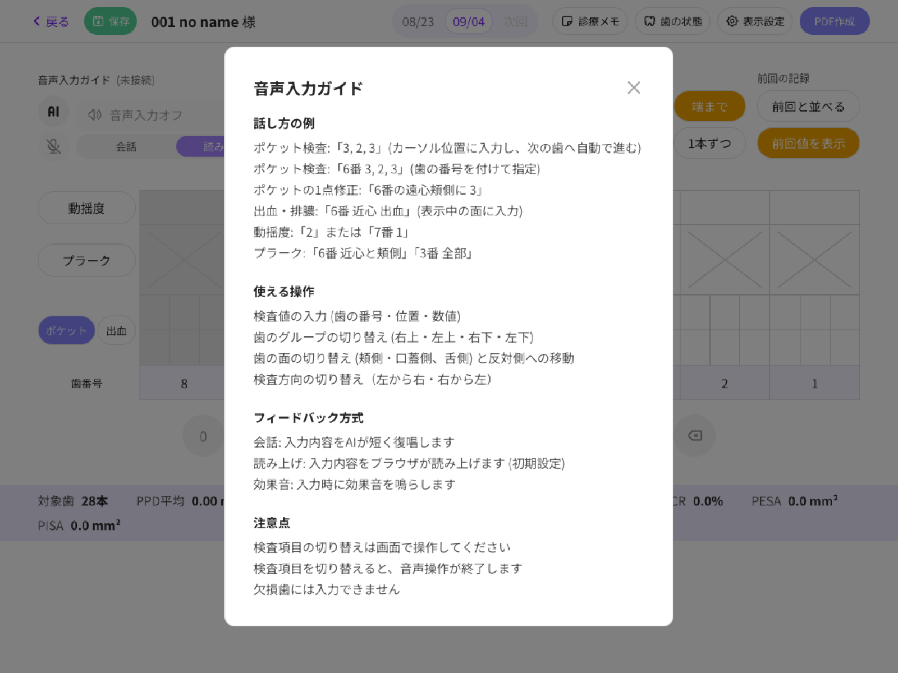
6点法・4点法・1点法に対応。医院の算定方針や検査の目的に合わせて切り替えられます。
右上・左上・右下・左下の4部位と頬側・舌側を、大きなボタンで切り替え。検査表は部位に合わせて行の並びとラベルの向きが変わります。
入力後、カーソルが自動で次の測定点へ進みます。列の端まで連続で進む「端まで」と、1歯ごとに止まる「1本ずつ」を切り替えられ、進む向きも→／←で選べます。
「前回と並べる」で各項目の下に前回の行を表示し、今回の値と上下で見比べながら進められます。上部の日付タブで過去の検査にも移動できます。
健全・欠損・乳歯・補綴・インプラントを患者ごとに設定（複数の組み合わせも可）。設定は検査表とPDFに反映され、欠損歯には入力できないよう表示されます。
動揺度・根分岐部・プラーク・ポケット（出血・排膿）・退縮度から、医院で記録する項目だけを表示できます。
集計は入力のたびにその場で更新されます。検査表は保存のほか、PDFとして出力できます。
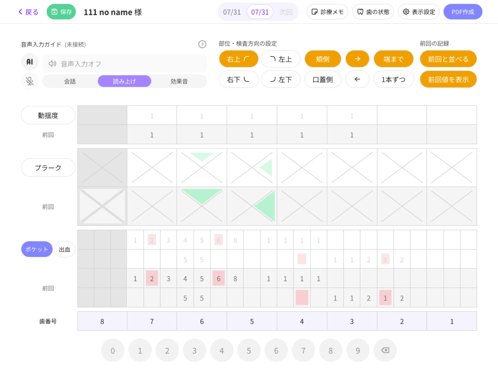
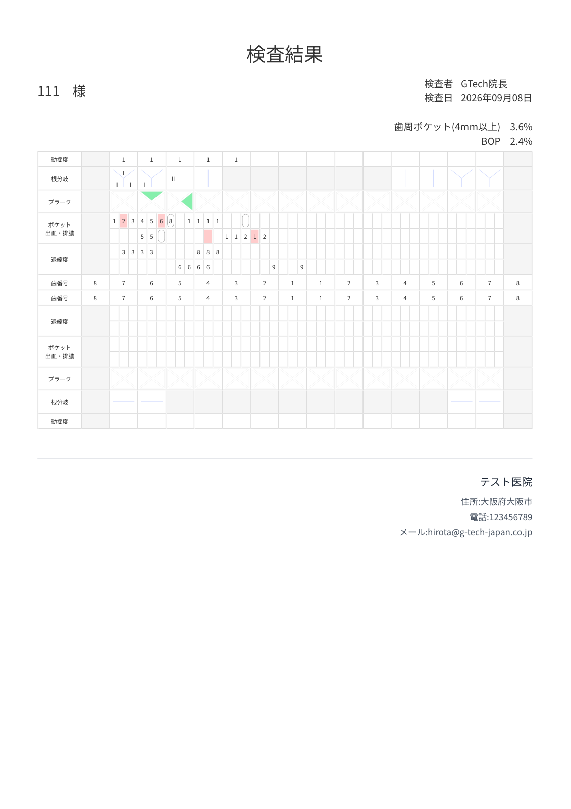
記録する検査項目と点数法は医院の運用に合わせて、歯の状態は患者ごとに。どちらも検査画面からそのまま開けます。
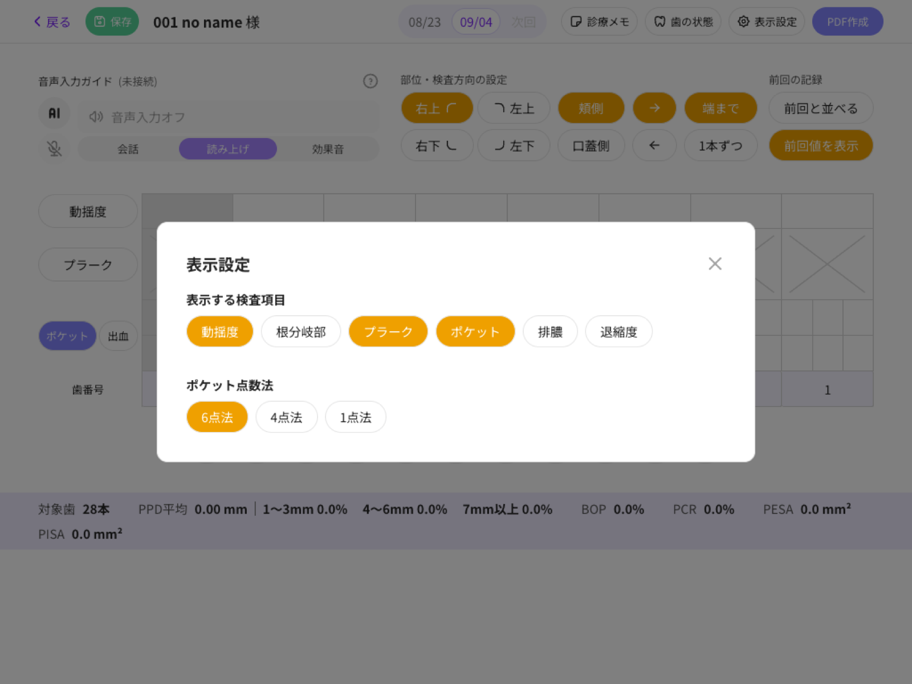
表示する検査項目（動揺度・根分岐部・プラーク・ポケット・排膿・退縮度）と、ポケットの点数法（6点法／4点法／1点法）を選びます。既定のままでもすぐに始められます。
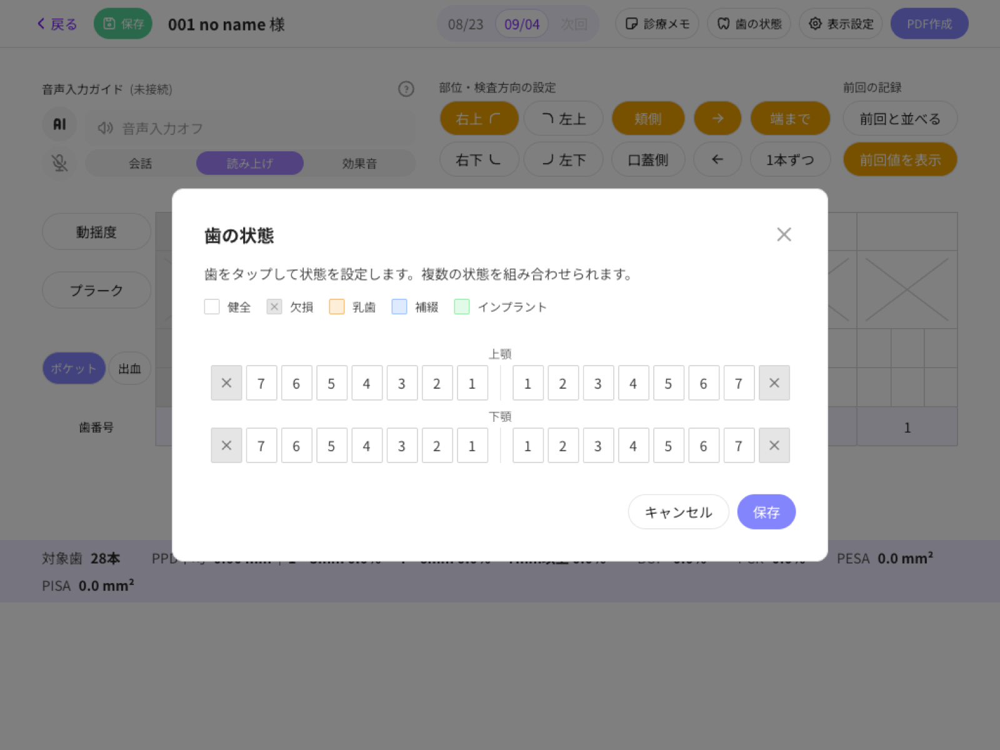
上顎・下顎の歯をタップして、健全・欠損・乳歯・補綴・インプラントを設定。検査表とPDFに自動で反映されます。
カルテ番号・患者名・来院日で患者を探し、その場で検査を始められます。過去の検査は来院履歴からいつでも開けます。
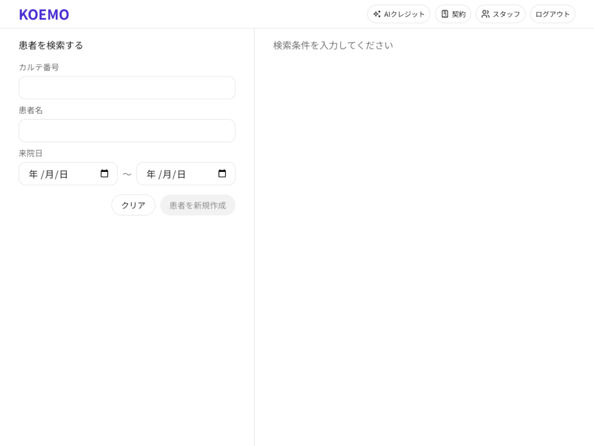
カルテ番号・患者名・来院日のいずれかを入れると一覧が出ます。初診の方は「患者を新規作成」からその場で登録。
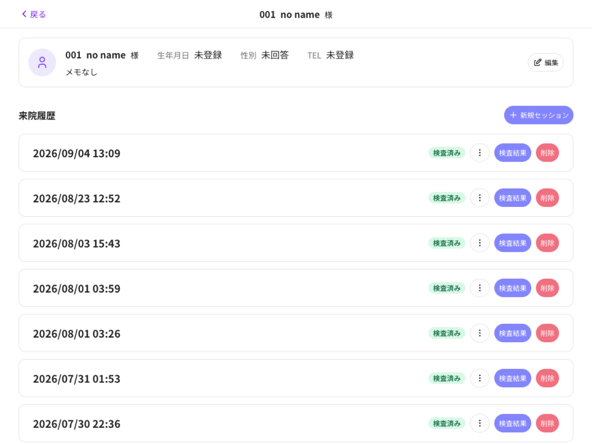
基本情報と来院履歴を一覧。「新規セッション」で本日の検査を開始し、過去の回は「検査結果」から開けます。診療メモや日時の修正もここから。
プロービング検査の画面と手順は、臨床経験の豊富な歯科衛生士による監修を受けて調整しています。（監修者の氏名・経歴は掲載準備中）
KOEMOは段階的に機能を公開します。第1弾のプロービング検査からご利用いただけ、以降の機能は同じ画面の中に追加されていきます。
音声入力・読み上げ確認・検査表・統計・PDF出力
公開中検査値と診療中の録音から、保険算定に必要な書類をAIが下書き
公開予定口腔内写真・動画・レントゲンを並べて説明。picmoR連携
公開予定患者さんがご自宅のスマートフォンで書類・写真を閲覧
公開予定開発中の画面です。公開時に仕様が変わる場合があります。
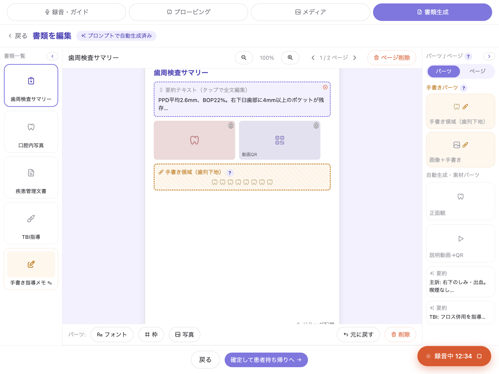
検査値と診療中の会話から、歯科疾患管理に関する文書・歯科衛生実地指導書などをAIが下書き。医院で扱う項目は設定で固定でき、必要な部分だけ手直しできます。
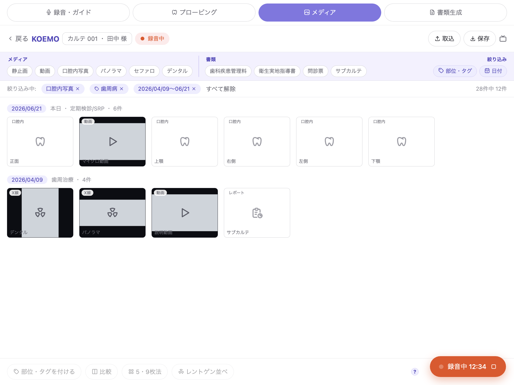
口腔内写真・動画・レントゲンを一覧から呼び出し、5/9枚法や術前術後の比較で提示。picmoRや院内NASの画像もそのまま使えます。
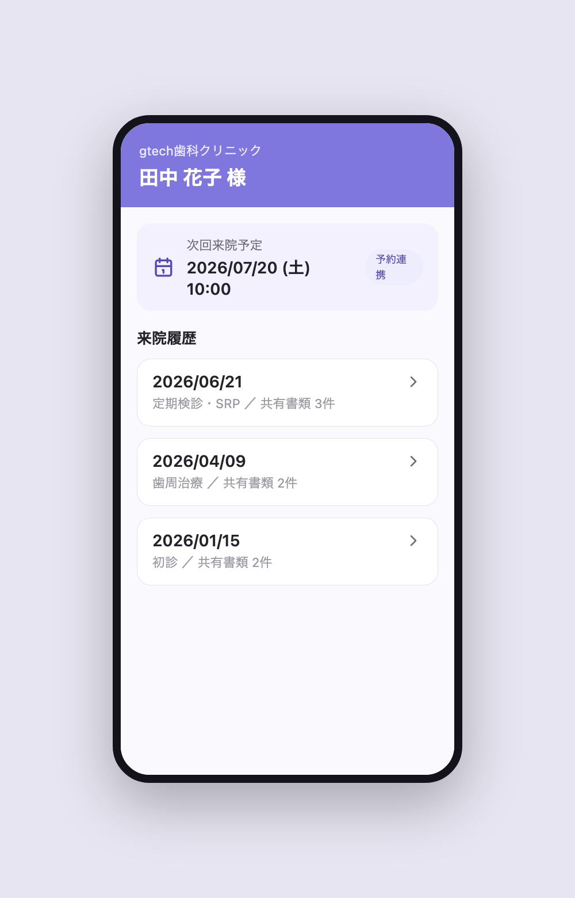
共有された書類・写真・説明動画を、患者さんがスマートフォンから見返せます。パスコード保護、閲覧期限、医院のロゴ・テーマカラーに対応。
専用機器の設置は不要です。お手持ちのiPadまたはPCのブラウザからご利用いただけます。
フォームまたはLINEからご連絡ください。オンラインで実際の音声入力をご覧いただけます。
医院情報とオーナーアカウントを登録します。検査を担当する歯科衛生士の方のアカウントは、サポートが追加します。
検査画面の「表示設定」で、表示する検査項目と点数法（6点法／4点法／1点法）を医院の運用に合わせます。既定のままでもすぐに始められます。
毎月1,000クレジットの無料枠つきで、その日から音声入力をご利用いただけます。足りない分はAIクレジットをチャージ（1,000〜10,000）。
月額の基本利用料に、ご利用人数分のユーザー料金を加えたかたちです。音声入力などAIの利用料は、使った分だけをチャージ式でお支払いいただきます。
| 項目 | 内容 | 料金（仮） |
|---|---|---|
| 初期費用 | アカウント開設・初期設定 | 無料 |
| 基本利用料 | オーナー＋スタッフ1名を含む | ¥○,○○○／月 |
| 追加ユーザー | 1名につき | ¥○○○／月 |
| AIクレジット | 1,000／3,000／5,000／10,000クレジットから選択 | 1クレジット＝¥1 |
| 月次無料クレジット | 全医院一律・毎月付与（繰り越しなし） | 1,000クレジット |
プロービング検査でKOEMOをお使いいただいている歯科衛生士・先生からのご感想です。
検査中に手を止めなくなった
これまでは値を言って、記録する人がもう一人必要でした。声で入るようになってから、一人で検査が完結します。読み上げで確認できるので入力ミスも減りました。
患者さんから目を離さずに済む
プローブを持ったまま値を口にするだけなので、視線が口腔内から外れません。患者さんも「ちゃんと見てもらえている」と感じてくれているようです。
前回値が見えるのがいい
検査表に前回の値が薄く出るので、変化に気づきながら進められます。患者さんへの説明も、その場で数字を示せるようになりました。
今の記録の仕方のまま使える
表示する項目や点数法を医院の運用に合わせられるので、記録の仕方を変えずに導入できました。iPadはチェアに置いたままです。